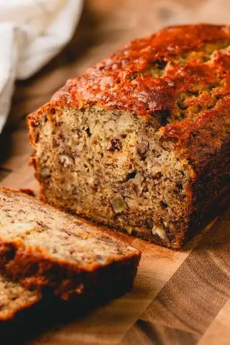

🍞 Flavorful Banana Loaf Bread

Ingredients
- 1 and 1/2 cups (190g) all-purpose flour
- 1 tsp baking soda
- 1/4 tsp salt
- 1/2 tsp ground cinnamon (optional, but recommended)
- 3 very ripe medium-sized bananas
- 1/2 cup (113g) unsalted butter, melted
- 3/4 cup (150g) packed brown sugar or white granulated sugar
- 1 large egg, lightly beaten
- 1 teaspoon vanilla extract
Optional Add-ins:
- 1/2 cup chopped walnuts or pecans
- cup chocolate chips
Equipment
- 9x5 inch (23x13 cm) loaf pan
- Large mixing bowl
- Medium mixing bowl
- Whisk
- Fork or potato masher
- Rubber spatula
Instructions
- Preheat your oven to 350°F (175°C).
- Grease and flour your 9x5 inch loaf pan, or line it with parchment paper for easy removal.
- In a medium bowl, whisk together the flour, baking soda, salt, and cinnamon (if using). This helps distribute the leavening agent evenly, which is key for a good rise. Set aside.
- In the large mixing bowl, peel the ripe bananas and mash them thoroughly with a fork or a potato masher. You want them to be mostly liquid with a few small lumps remaining for texture.
- To the bowl with the mashed bananas, add the melted butter, brown sugar, beaten egg, and vanilla extract.
- Mix with a whisk or spatula until everything is well combined.
- Pour the dry ingredients into the large bowl with the wet ingredients.
- Gently fold the ingredients together with a rubber spatula until just combined. Do not overmix! A few streaks of flour are okay. Overmixing develops gluten and can make the bread tough and dense.
- If you are using nuts or chocolate chips, gently fold them in now.
- Pour the batter into your prepared loaf pan and spread it evenly.
- For a professional look, you can place a banana sliced in half lengthwise on top of the batter.
- Bake in the preheated oven for 50-60 minutes.
- Around the 50-minute mark, check for doneness by inserting a toothpick or skewer into the center of the loaf.
- If it comes out clean or with a few moist crumbs attached, it's done.
- If it comes out with wet batter, bake for another 5-10 minutes and check again. If the top is browning too quickly, you can loosely cover it with aluminum foil.
- Once baked, remove the loaf pan from the oven and let it cool on a wire rack for about 15 minutes.
- After 15 minutes, carefully remove the banana bread from the pan and let it cool completely on the wire rack before slicing. This step is important, as it will be crumbly if you slice it while it's still warm.
Storage
- Store the completely cooled banana bread in an airtight container or wrapped tightly in plastic wrap at room temperature for up to 3 days.
- For longer storage, you can refrigerate it for up to a week.
- It also freezes beautifully! Wrap the whole loaf or individual slices in plastic wrap, then a layer of aluminum foil, and freeze for up to 3 months.
Pro Tips
- Room temperature ingredients mix better - take eggs and butter out 30 minutes before baking
- Don't overbake! The bread continues cooking on the hot pan even after removing from oven
- For a chewier bread, slightly underbake them. For a crispier bread, bake a minute longer